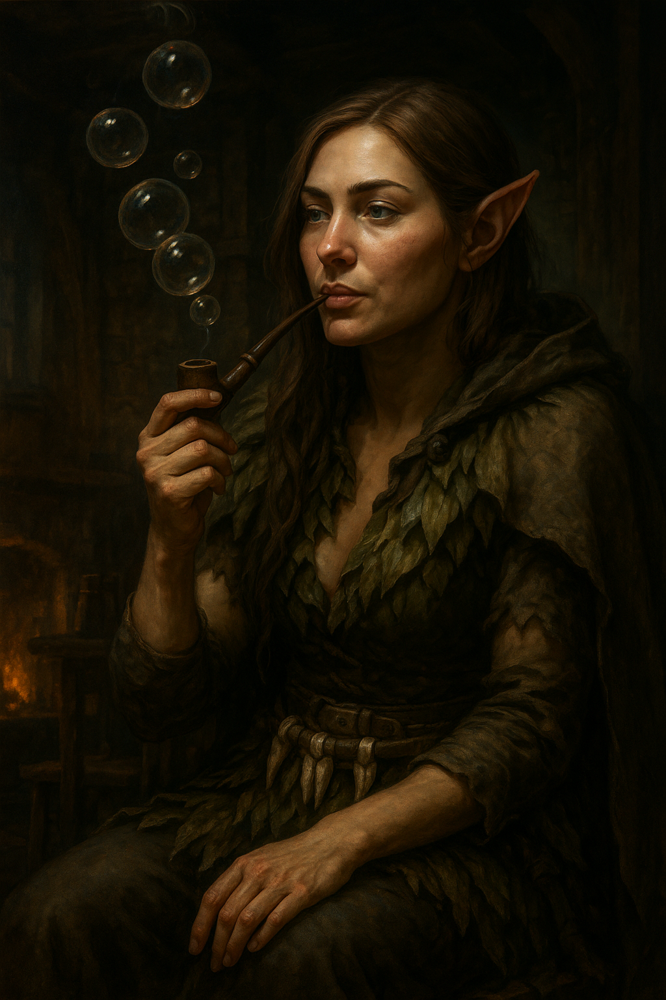

☰
Sirael Cockven
Sirael, ochránkyně zvířat se potulovala lesy a z nějakého důvodu vykročila ze Sucholesa právě do Pełzacze, kde si řekla, že pro jednou by neškodila měkká postel a jídlo připravené lidmi a ne lesem. Družinu podpořila v jejich snaze najít syna France Jeszeta a nadále se k nim připojila.
Když jsem byla malá s rodiči jsme hodně cestovali.Dodnes mi není jasné, jestli to bylo cestování, nebo utíkání před valkou (Můj dědeček nás donutil odjet z města).
Na cestě - Rodiče se snažili mě uchránit před zlem, které se v lesích ukrývalo, ale já jsem nikdy neposlouchala, co mi kdo říká, nebo zakazuje. Jednoho dne jsem - asi v sedmi letech - utekla do lesa jménem GOST (hrůza, či děs), kde mě našla obrovská zvířata... pamatuj si matně, že to byly jakési podivné šelmy.
Asi dva měsíce mě nikdo nemohl najít. Žila jsem z kořínku, bobulí a z toho co mi šelmy donesli za zbytky. Jednoho dne jsem viděla jaké jsi světlo úplně bílé bez jakékoliv temnoty. Byl to bílý jelen. Zářil jako slunce. Začla jsem ho následovat. Došla jsem do mechové chaloupky s měkkou postelí z mechu a slámy.
Když jsem se probudila měla jsem na stolečku přípravnou polévku ze sušených hub a jehličí. Po několika hodinách přišel do chaloupky postarší elf Morco - byl to druid. Když jsem se ho zeptala, jestli by mě nevyvedl z lesa, že na mě čekají rodiče, řekl mi, že už na mě nikdo nečeká. "Ale, ale však jsem pryč jen pár týdnů oni by mě nepřestali hledat" řekla jsem. "Ne, nebylo maličká tady běží čas jinak pro tebe to bylo pár týdnů, ale pro svět mimo GOST to bylo pár let." Odpověděl mi Morco. Strýček Morco se od té doby o mě staral jako o vlastní dceru a naučil mě jak chránit les a zvěř v něm. Uběhlo několik desetiletí kdy hrůza lesa postupem času ustupovala a zvědavost lidí a trpaslíků začala náš les přitahovat. Se strýčkem jsme je úspěšně po několik let odháněly, že měli opět strach z lesa. Morco mě nikdy nedovolil opustit les kvůli válce a obrovskému zlu co se šířilo světem.
Když válka a zlo utichlo, lidé a trpaslíci (dřevorubci, horníci, lovci) začali náš les navštěvovat a ničit. Strýček se je snažil opakovaně odehrávat různými kouzly a zvířecími formami, ale je to nezastavilo a vraceli se ve větších počtech a s různými mágy.
Jednoho večera se strýček nevrátil. Věděla jsem že musím chránit les. Nebyla jsem dostatečně silná nemohla jsem ubránit síle požáru co mágové vyvolali. Utíkala jsem společně s přáteli do jeskyní, ale když už byla v jeskyni na dohled tak z ní vyšel obrovský plamen který shodil skálu nad jeskyní a zamezil nám cestu k úniku. V posledních chvílích kdy jsem se svíjela na zemi v bolestech a kolem mě byl všude oheň, padaly stromy a křičeli zvířata bolestí se objevilo tak bílé světlo že jsem nevnímala nic jiného. Probudila jsem se uprostřed jezera nemalém kameni z kterého jsem doplavala na břeh a vydala jsem se k lesu.
Les byl na popel... Už nehořel - jen doutnal. Strávila jsem několik měsíců pohřbíváním kostí svých kamarádů aby jejich duše mohli odpočívat v pokoji.
Strýčka jsem nikdy nenašla. Vydala jsem se na cestu směrem k vesničce, kde jsem se pohybovala jako pouhé kočisko abych poznala jak lidé žijí. Po několika týdnech zkoumání jsem se s nimi dala do řeči a zjistila jsem že nejsou tak zlí. Jedla jsem s nimi pila jsem s nimi a smála jsem se s nimi. Po nějaké době do vesnice přišlo pár zajímavých osob a divný ještěr, kterého jsem v životě neviděla.
Dobrodružství, která prožila:
- Hledání ztraceného syna
- - Franci Jeszetovi se ztratil syn, boj s vlky
- Doprovod karavany
- - doprovod zboží do Garagoru, potkání Narmera a Neery
- Průzkum rozbitých chodeb podzemí
- - průzkum podzemních komplexů, na který dostal Emer zakázku, Pertan zde velmi tápal ve tmě, Sirael byla nepěkně překvapena, když zjistila, že v temmých chodbách se to nemusí hemžit jen krysami
- Hledání Neery pt.1
- - Neeru někdo unesl, vyšetřování kdo jí unesl, Perlíkův moment boje, setkání s GGG a Alocou
- Hledání Neery pt.2
- - Neera se konečně dostala do Věže, kde družinu přivítal Raistlin a slíbil, že Neera se bude učit a bude mít ve Věži útočiště
- První práce pro Narmera
- - Narmer družině řekl, že potřebuje aby pro něj sehnali magický předmět, který měl kdysi Ferfi Devon, boj s pavouky, boj s nemrtvými (ghúlové a hobbit-sized skeleton) a fextem.
- Tribunál Velkého Čaroděje pt.I
- Do Pełzacze přijela Garagorská stráž se zatykačem na Huga. Družina s Dernhelmem to vyřešila/pozdržela a vydala se do Garagoru zjistit, co se děje. Našli sérii dalších falešných zatykačů a zjistili, že je vydává V.Č., našli obviněného Toníka, který jim řekl o Tribunálu Velkého Čaroděje.
- Tribunál Velkého Čaroděje pt.II
- Družina hledá tři Soudce. Pomocí stop vypátrali soudkyni Justii Kroell, tu byli nuceni zabít. Poté našli Voletha Dranna, toho vyslechli a nechali ho jít, protože zjistili, že je jen tragickým nečinným přihlížejícím. Ten je ještě varoval před posledním soudcem Borwaldem Gellem. Zuana byla zatknuta a odvedena.
- Tribunál Velkého Čaroděje pt.III
- Družina dostihla soudce Borwalda Gella a zabila jej. Strhli jeho svatyni pro Bhaala a vyzvedli odměnu. Odpočívali a přemýšleli co s Velkým Čarodějem. Následně byli svědkem upálení Zuany a velkého projevu Dana, nového kapitána Garagorské stráže.


Elf Druid
